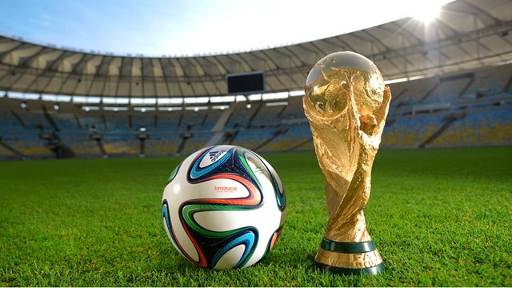
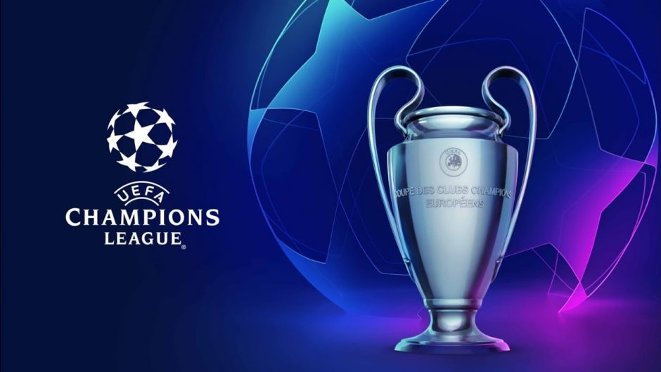
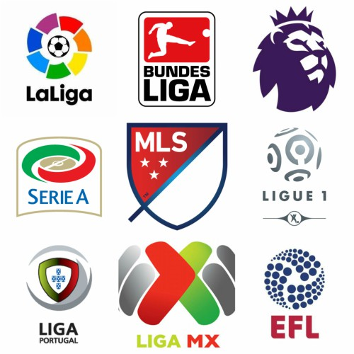
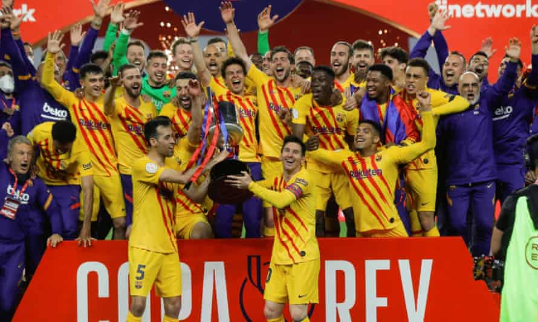

The World CUp is the most entertaining and most viewed event in the world. This two month tournament is hosted every four years, in a place chosen by bids, and only deals with international teams. During the four year period, national teams play in qualifiers in order to secure their spot in the next World Cup. In a normal tournament style, after group stages, knock-out stages follow. The team to win the finals is deemed the best soccer team in the world. The excitement of seeing your nation fight for the title is an incredible feeling that every person should experience. The best players are chosen to represent their nations.
The last World Cup was hosted in Russia, with the winner being France. France beat Croatia 4-2. The following World Cup is in 2022 and is planned to be hosted by Qatar. I hope that the United States qualifies and makes a great run in the next two tournaments, as they have a lot of young talent.

The Champions League is an annual tournament comprised of the top teams in Europe. There are 32 teams that qualify for this tournament. The 32 teams are then divided into 8 groups. Each team plays twice, and the team top two teams from each group qualify to the round of 16. From there it is a 2 leg game format until the final. Last year, Bayern Munich won the tournament without losing a single game. Real Madrid has won this tournament this most amount of times. (13 Titles)
The Europa League is the lesser known tournament. This is a league comprised of lesser skilled teams that failed to qualify for the Champions League. The winner of the Europa League automatically qualifies for the Champions League the following season.

Each country has their own league made up of the best teams in the country. The last 3 teams in the table are relegated to the inferior division, while the top three in the lower division move up to the superior division. Apart from winning the league, the goal is usually to stay outside of relegation zone in hopes of keeping your title dreams alive. Each country has the popular first division leagues, as pictured to the right, and typically lower leveled leagues that are fighting to make it to the next level.
The highest level of competition, in my opinion, is usually in the English Premier League. Many teams are always in title contention and the title race usually isn't decided until the last two games roll around. Despite this, some of the best teams reside in other leagues, such as the Spanish La Liga, the German league, the Bundesliga, or the French league, League One.

Just like the leagues, each country has their own tournament. Teams from every division fight for this cup, trying to prove that they can compete with the big dogs. It is quite normal to see a first division team lose to a third division team. More often than not, a team from the first division wins this trophy, but it can be exciting seeing smaller clubs attempt to take down the giants. Many small club fans love these tournaments since it can put their teams in the spotlight. This trophy is more so for bragging rights and monetary purposes. It is entertaining but some major clubs do not take it as serious as the Champions League or the domestic leagues. Barcelona is pictured celebrating their win in this years Spanish domestic cup, the Copa del Rey.